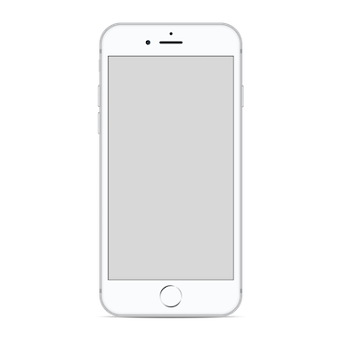

The Client
The Boston Institute for Nonprojfit Journalism aggregates and promotes journalism and media from independent and local publications in the Boston area. It is an active source of news for people who want to focus on stories that affect them and their neighbors.
The Project
In order to enhance BINJ’s focus on local news, we built a story map extension to their website. This allows users to visually see stories that take place in their area and to quickly and easily filter stories based on their location or a given topic.